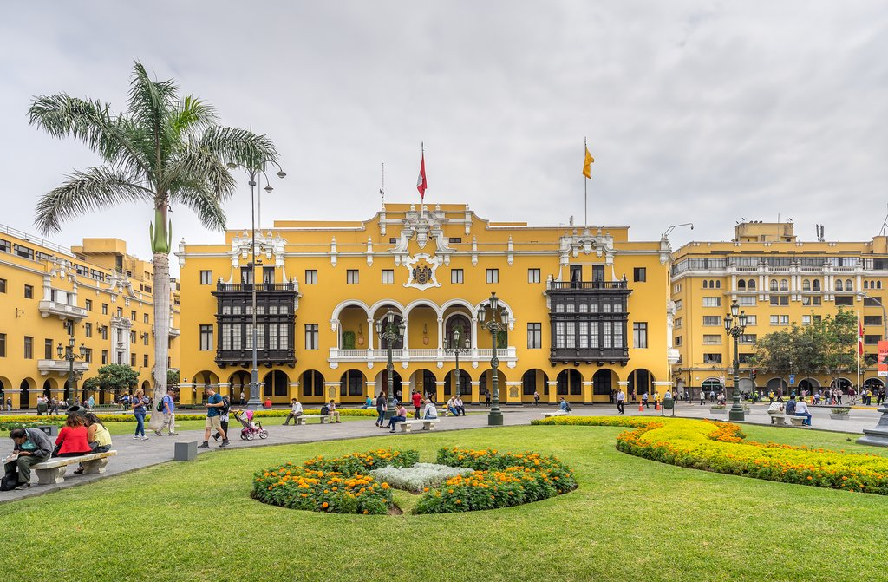

MI CIUDAD

"Arequipa"
Arequipa es la ciudad donde actualmente vivo
Tiene bonitas calles, mucha naturaleza y un buen clima
La mayor parte de Arequipa es limpia y sin tanta inseguridad como otros departamentos
Tiene bastantes lugares turisticos y varias fiestas tipicas de la region a lo largo del año
Su gastronomia tambien es interesante, cuenta con platos muy caracteristicos y autenticos que hacen uso de los ingredientes regionales

"Lima"
Naci en Lima y gran parte de mi vida vivi alli.
Actualmente es la capital del Peru y tiene la mayor poblacion del Peru en departamentos
Cuenta con un clima muy fresco y humedo casi todo el año.
En verano las temperaturas del calor son insoportables
El trafico entre semana puede ser muy intenso por eso se recomiendo salir en bicicleta
La mayoria de las actividades como conciertos, partidos de futbol o eventos importantes se dan en Lima.